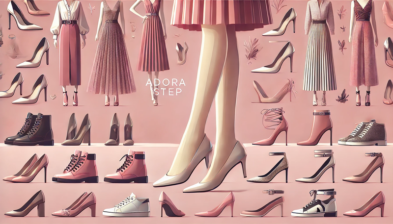
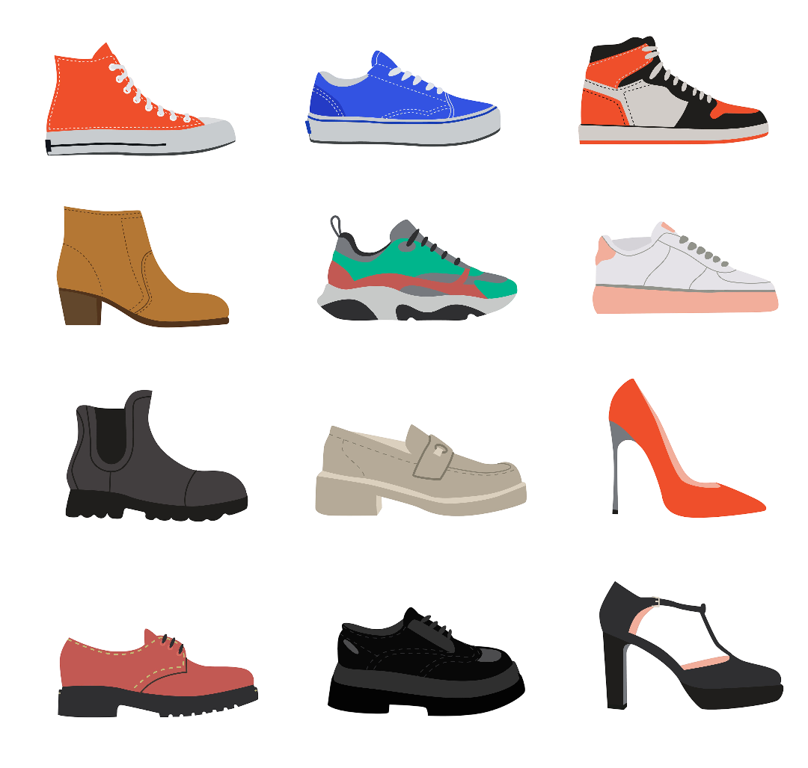

Bine ați venit la Magazinul de Pantofi AdoraStep, un magazin online dedicat celor mai elegante și confortabilepantofi. Aici găsiți o gamă variată de produse, de la pantofi cu toc la adidași, cizme și sneakers, oferind în același timp opțiuni pentru încălțăminte casual și încălțăminte formala.
Pantofii nu sunt doar un accesoriu de modă, ci și o necesitate zilnică care contribuie la sănătatea și confortul picioarelor. Fiecare pereche este aleasă cu grijă pentru a combina designul modern cu materiale de înaltă calitate, oferind suport optim în orice situație.
Povestea noastră începe din dorința de a aduce inovația și rafinamentul în fiecare pas. La AdoraStep, credem că fiecare pereche de pantofi spune o poveste unică – fie că este vorba de un eveniment special sau de o zi obișnuită. Folosim tehnici moderne de fabricație și materiale ecologice pentru a crea produse care îmbină estetica cu durabilitatea.
De-a lungul anilor, am acumulat experiență și pasiune pentru încălțăminte, oferind clienților nu doar produse, ci și sfaturi de stil și îngrijire. Fiecare model este gândit pentru a răspunde nevoilor variate ale clienților noștri, de la confortul zilnic la eleganța evenimentelor deosebite.

O selecție din pantofii noștri
Comercializăm produse de la firme de top precum New Balance, Valentino, Reebok și multe altele! Fiecare brand a fost ales pentru calitatea și inovația sa, astfel încât să puteți găsi întotdeauna ceva care să se potrivească stilului dumneavoastră.
Descoperă mai multe dintre brandurile pe care noi le comercializăm dând click pe unul dintre pantofii de mai jos! S-ar putea să fii surprins de diversitatea și creativitatea modelelor noastre.

Motto-ul nostru
"Moda nu este ceva care există numai în rochii. Moda este în cer, pe stradă, moda este legată de idei, de viață, de tot ceea ce ne înconjoară."
Promoții Speciale
Descoperiți ofertele noastre de reduceri și promoții la pantofi sport și pantofi de lux. Nu ratați șansa de a cumpăra pantofi din piele sau pantofi din catifea la prețuri avantajoase!
Promoțiile noastre sunt gândite nu doar ca o simplă reducere de preț, ci ca o modalitate de a vă oferi acces la ultimele tendințe în materie de design și confort. Fiecare ofertă este concepută pentru a satisface nevoile clienților noștri, aducând inovație și valoare adăugată fiecărei achiziții.
Clienții noștri beneficiază de consultanță dedicată, astfel încât fiecare achiziție să fie o experiență plăcută și informată. Fie că sunteți în căutarea unui model clasic sau a unei inovații moderne, promoțiile noastre vă ajută să găsiți întotdeauna cea mai bună opțiune.
În prezent, sunt valabile aceste reduceri site-wide:
Vans – 40% 60%
Reebok – 30%
Valentino – 10%
Formula Promoții
Calculul prețului promoțional se face astfel: prețul promoțional este egal cu prețul inițial minus o reducere procentuală. Exemplu:
Unde: P reprezintă prețul promoțional, C este prețul inițial, iar D este procentul de reducere.
Noutăți
Explorează aici ce este nou în lumea modei și află ultimele tendințe în materie de pantofi!
Pentru pasionații de modă, pantofii reprezintă un element esențial în definirea unui stil personal. Noile tehnologii și materiale inovatoare aduc pe piață modele ce combină estetica cu funcționalitatea, oferind confort pe tot parcursul zilei.
Industria încălțămintei este într-o continuă evoluție, iar tendințele actuale se axează pe sustenabilitate, confort și design atemporal. Modelele noastre includ detalii rafinate, cum ar fi cusături precise, materiale respirabile și tălpi ergonomice, menite să reducă oboseala și să îmbunătățească postura.
De asemenea, colaborăm cu designeri renumiți pentru a aduce colecții exclusive, care reușesc să surprindă esența modei contemporane, păstrând totodată legătura cu tradițiile clasice în domeniul încălțămintei.
Găsește-ți stilul!
Nu te-ai hotărât încă? Ți-am pregătit următoarele articole pentru a te ajuta să îți găsești stilul, fiind în trend cu cele mai noi tendințe!
Te întrebi ce pantofi să-ți mai cumperi sau cu ce să-i asortezi? Iată ce poartă celebritățile pentru a-și sublinia personalitatea și stilul unic. Fiecare detaliu, de la tălpile elegante la finisajele rafinate, contribuie la crearea unei imagini impecabile, indiferent dacă ești la o petrecere sau într-o întâlnire de afaceri.
Uite cum să integrezi cu succes fiecare pereche de pantofi în garderoba ta:
Evoluția Modei: 100 De Ani De Pantofi
Ai fost vreodată curioasă să vezi cum au evoluat trendurile în ultimii 100 de ani și cum s-au transformat modelele de pantofi de la eleganța clasică la inovațiile contemporane?
Evoluția modei este o mărturie a schimbărilor culturale și tehnologice din societate. Pantofii au trecut de la modele rudimentare la creații sofisticate, care reflectă atât tradiția, cât și inovația. De-a lungul secolului, fiecare epocă a adus cu sine noi influențe – de la siluetele vintage la formele futuriste ale modei moderne.
Aceste schimbări nu doar că ne oferă o privire retrospectivă asupra istoriei, dar ne și inspiră în alegerea modelelor care se potrivesc cel mai bine stilului și nevoilor actuale. În acest context, tehnologia și sustenabilitatea au devenit piloni importanți, contribuind la crearea de pantofi care sunt prietenoși cu mediul și confortabili pentru utilizator.
{kind=link}